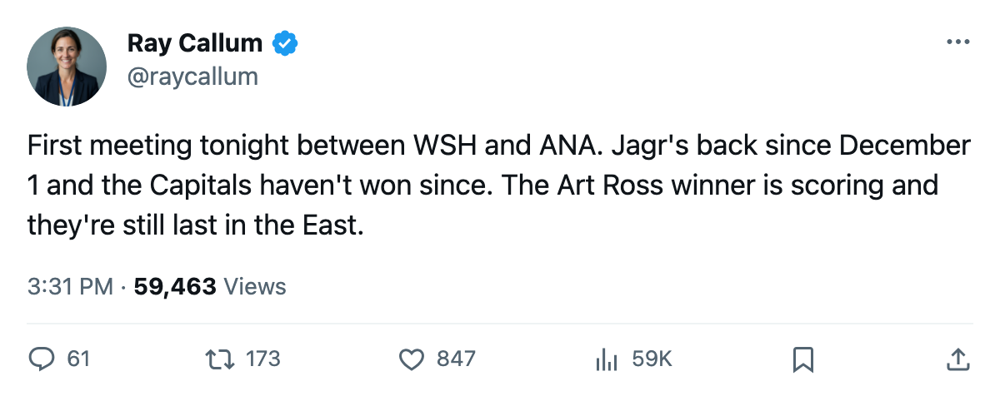

First Meeting: Washington and Anaheim Have Not Played This Season, and Tonight Neither Can Afford Another Loss
The Capitals are last in the East at 22 points. The Ducks are 1 point ahead of 8th in the West.
 Ray CallumSenior correspondent · Home Ice Network
Ray CallumSenior correspondent · Home Ice Network
 Washington Capitals visits
Washington Capitals visits  Mighty Ducks of Anaheim tonight, and the two clubs have not met this season. Washington sits 15th in the Eastern Conference at 22 points, last in the league by points per game at 0.79. Anaheim sits 7th in the West at 31 points, one ahead of the two clubs tied for 8th.
Mighty Ducks of Anaheim tonight, and the two clubs have not met this season. Washington sits 15th in the Eastern Conference at 22 points, last in the league by points per game at 0.79. Anaheim sits 7th in the West at 31 points, one ahead of the two clubs tied for 8th.
The Capitals have lost 3 straight. In the last 10 they scored 25 and allowed 30. They are 5-11 on the road.  Jaromir Jagr84 returned December 1 from a neck injury; the win-loss column has not moved since. Washington has 23 injury spells this season and 125 days lost to the injured list, fourth-most in the league.
Jaromir Jagr84 returned December 1 from a neck injury; the win-loss column has not moved since. Washington has 23 injury spells this season and 125 days lost to the injured list, fourth-most in the league.
Anaheim has won 3 straight, including a 3-2 overtime win over  Nashville Predators on December 8. The Ducks are 8-5 at home. Across the last 10: 25 goals scored, 23 allowed, with the 3 opening wins all coming by one goal. This is a team within striking distance of the 8th-place line and trying to pull away from it.
Nashville Predators on December 8. The Ducks are 8-5 at home. Across the last 10: 25 goals scored, 23 allowed, with the 3 opening wins all coming by one goal. This is a team within striking distance of the 8th-place line and trying to pull away from it.
 Olaf Kolzig83 started 22 of 28 for Washington, carrying 79% of the workload.
Olaf Kolzig83 started 22 of 28 for Washington, carrying 79% of the workload.  Jean-Sebastien Giguere95 started 22 of 29 at 76%. The Vezina Trophy winner from last season is 9-13-1 and still carrying a Ducks club that has allowed 68 goals in 29 games, the fewest of any team above 31 points in the West.
Jean-Sebastien Giguere95 started 22 of 29 at 76%. The Vezina Trophy winner from last season is 9-13-1 and still carrying a Ducks club that has allowed 68 goals in 29 games, the fewest of any team above 31 points in the West.
Injuries: Anaheim is without  Vaclav Prospal77 (ankle, December 17),
Vaclav Prospal77 (ankle, December 17),  Rob Niedermayer73 (concussion, December 15), and Patrick Boileau70 (neck, January 21). Washington carries 2 players on the injured list, including Jussi Vertala67 (rib, December 27).
Rob Niedermayer73 (concussion, December 15), and Patrick Boileau70 (neck, January 21). Washington carries 2 players on the injured list, including Jussi Vertala67 (rib, December 27).
The first meeting between these clubs comes at a point where one is running out of rope and the other is trying not to fall into the pack. Washington scored 69 goals this season, more than Anaheim's 62. Washington allowed 81, thirteen more than Anaheim's 68.
